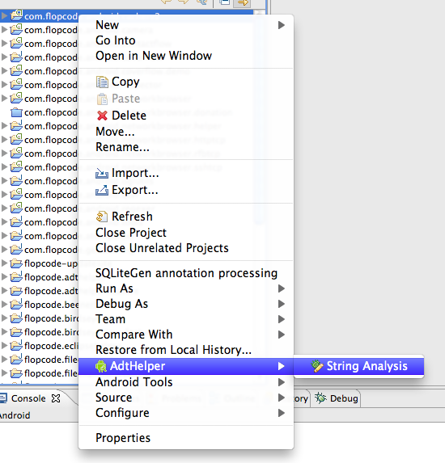

ADT-Helper
Story
Implementation
Sources
I am a little dazzled why there are so few eclipse plugins that complement the adt-plugin. I have only done very small android projects, but there I felt already the need for some more help from the ide:
- e.g. a codegenerator for contentproviders based on something like the rails model descriptions would be a huge improvement (one guy from the androidvnc project has done something like this).
- adding to the contentprovider field a tool for migrations would be really good.
- you always need help with internationalization.
Again I choose the html-java hybrid programming model (mainly because i wanted to tryout the html-widgets as they are provided by swt). Read more about the fun of mixing html into your application at the regexer
The sources are located in my private svn repository, which i access with git.
Screens
